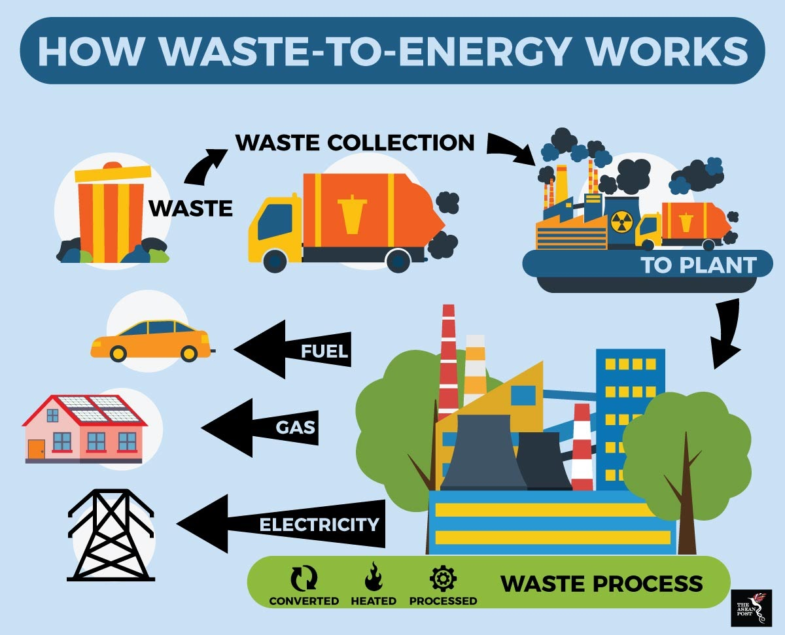
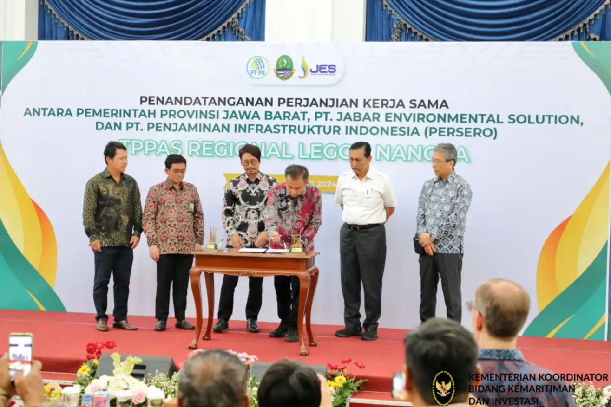
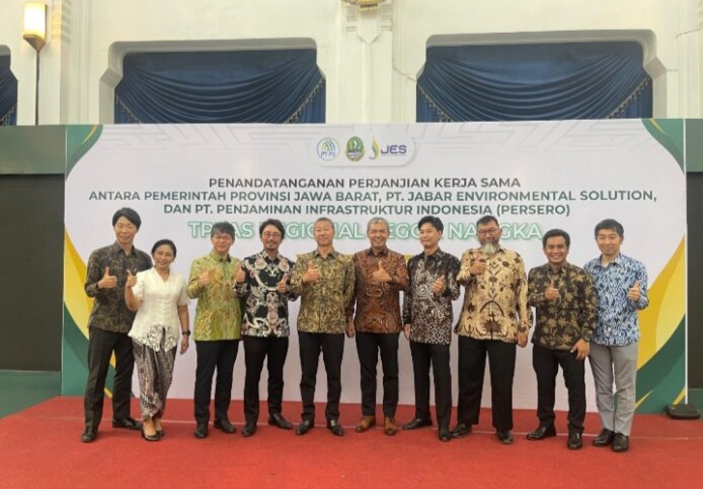

Jika diartikan dalam bahasa Indonesia, waste to energy berarti limbah ke energi. Teknologi ini terkenal akan manfaatnya yang begitu cocok untuk menghadapi isu dalam jumlah sampah yang ditemukan di dunia saat ini. Jumlah sampah yang tertumpuk di TPA terus bertambah dan Indonesia salah satunya mendapat dampak negatifnya karena penguraian sampah seperti plastik begitu lama. Selain itu, masih ada juga masyarakat yang membuang sampah sembarangan. Pengolahan limbah menjadi energi untuk listrik terutamanya, menggunakan tekonologi yang begitu maju dan tentunya mahal. Namun, persebaran penggunaan teknologi ini yang semakin luas membuatnya lebih terjangkau bagi negara-negara lain yang menginginkannya. Proses pendapatan energi ini melalui aktivitas pembakaran sampah yang tidak dapat didaur ulang. Penggunaan teknologi ini di negara Eropa terbukti berhasil memberikan energi listrik bagi 18 juta penduduk, berasal dari 90 juta ton sampah domestik dan sejenisnya pada tahun 2015 di sana. Hal ini memberikan dampak positif bagi TPA dan juga masyarakat. Oleh karena itu, penggunaan fasilitas ini di Indonesia dapat menjadi solusi cepat untuk menangani jumlah sampah di Indonesia sambil memberikan bonus energi bagi kehidupan bermasyarakat sebagai perwujudan dari tujuan SDGs yang ketujuh.
Pemerintah provinsi Jawa Barat dan PT Jabar Enviromental Solusions yang didirikan oleh Jepang menandatangani MoU di Gedung Sate, Bandung. Menurut Penasihat Senior Menteri Lingkungan Hidup Ono Hiroshi, pemerintah Jepang juga sangat mendukung akan kolaborasi penting ini. Peran Jepang adalah membantu Indonesia dalam pembangunan fasilitas pengolahan sampah menjadi energi di Legok Nangka, Jawa Barat. Oleh karena itu, kerja sama ini disebut proyek Legok Nangka. Fasilitas ini ditargetkan untuk bisa mengolah sekitar 2.000 ton sampah setiap harinya dan dijadikan listrik sebesar 40 MWatt sehingga membantu mengurangi sampah di TPA. Selain pihak Indonesia, pastinya pihak Jepang pun juga mendapatkan keuntungan lainnya dari kerja sama ini yaitu meningkatkan pendapatan, memberikan pengalaman agar dapat lebih memajukan teknologi di negaranya, mendukung perwujudan sdgs negara Jepang, dan mempererat hubungan dengan Indonesia sehingga menghasilkan perdamaian antara kedua negara. Melalui kerja sama ini tidak hanya di Bandung saja, tetapi juga kota-kota lain sudah dapat merasakan penggunaan fasilitas ini diantaranya Solo, Surabaya, Jakarta, dan Bekasi. Namun sayangnya, dari 4 lokasi tersebut hanya tersisa 2 yang diproritaskan dan masih aktif berjalan hingga sekarang yaitu di Solo dan Surabaya. Oleh karena itu, pengurangan jumlah sampah di Indonesia belum berhasil dan masih diperlukan banyak promosi akan aksi untuk mendaur ulang.
 